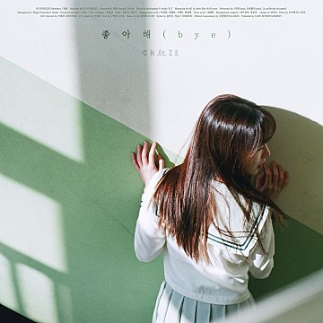
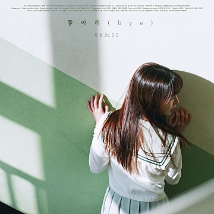
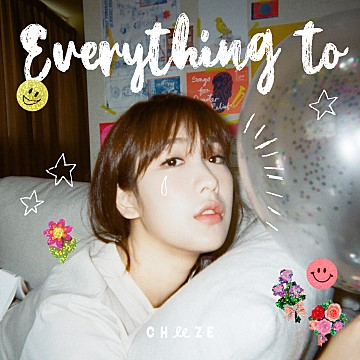

🧀 CHEZZE 🧀
❤ 가수 cheeze의 달총 팬페이지 ٩(๑❛ᴗ❛๑)۶ ❤
아이디비밀번호
ALBUM
 

2015.05.13 2016.06.16 2017.02.20 2017.05.18
1.5집 PLAIN Q 좋아해(bye) Be There
대표곡 듣기
2017.12.19 2018.01.26 2018.02.23
SHORT FILM 'Sequence 1' SHORT FILM 'Sequence 2' SHORT FILM 'Sequence 3'
대표곡 듣기

2018.10.05 2019.05.19 2019.08.06 2019.09.04
Everything to Plate Summer Love... Dingo X CHEEZE & pH-1
대표곡 듣기
🎬 Music Video 🎬
[M/V] 치즈 / CHEEZE – 어떻게 생각해
[M/V] 치즈 / CHEEZE – 좋아해 (bye)
[M/V] 치즈 / CHEEZE – Be there
[M/V] 치즈 / CHEEZE – 우린 어디에나 (WE’RE EVERYWHERE)
📷 PHOTO 📷
🧡 사진 더보기 🧡
📜 뉴스 📜
"치즈(CHEEZE) 새 EP ‘PLATE’ 발매 “사랑의 다양한 감정을 한가득 담은 앨범”
"‘남자친구’ 첫 번째 OST 치즈 ‘영화 같던 날’ 29일 발매”
싱어송라이터 치즈(CHEEZE)가 19일 오후6시 새 EP앨범 ‘Plate’를 발매했다. ‘Plate’는 설레임 가득한 만남에서 연애, 이별 등 사랑의 다양한 감정을 각기 다른 스타일 들의 곡으로 꽉 채워 한접시에 담아 냈다는 뜻으로 치즈 노래 특유의 트랜디하고 POP 적인 편곡과 달총의 매력적인 보컬이 돋보이는 앨범이다. 타이틀곡 ‘우린 어디에나’는 봄과 어울리는 미디엄템포의 r&b장르로 사랑의 설레임을 표현한 가사와 사랑스럽고 감미로운 치즈의 목소리가 매력적인 곡이다. 또 다른 타이틀곡 ‘orange’는 치즈가 직접 작곡에도 참여한 곡으로 막 사랑에 빠진 감정을 오렌지 컬러에 비유한 귀여운 곡이다. 그 외에도 ‘all day’, ‘돌아가자’ 등 총 4곡이 수록된 이번 앨범은 치즈가 전곡 작사를 맡아 치즈만이 표현할 수 있는 사랑이야기를 그려냈다. 또한 앨범의 커버와 CD디자인에는 일러스트 작가 ‘권서영’이 참여하여 다채로운 치즈의 음악적 색을 다양한 일러스트로 표현했으며, 샘김, NCT DREAM, 선우정아 등의 뮤직비디오를 제작한 SEGAJI가 뮤직비디오 제작에 참여하여 노래의 완성도를 더욱 높여주었다. 소속사 매직스트로베리사운드는 “이번 치즈의 새 EP앨범은 기존의 트렌디한 치즈 스타일에 POP적인 요소를 추가하여 누구나 쉽고 편하게 들을 수 있는 노래들로 준비했다. 그리고 EP발매 후 여름 단독 공연을 준비할 예정이니 팬들의 많은 관심과 기대 부탁드린다”고 전했다. 기사 출처 |
시작부터 뜨거운 화제를 모으고 있는 tvN ‘남자친구’의 첫 번째 OST가 베일을 벗는다. tvN 새 수목드라마 ‘남자친구’ 측은 첫 번째 OST인 CHEEZE(치즈)의 ‘영화같던 날’이 29일 오후 6시에 발매된다고 전했다. ‘영화같던 날’은 마치 흑백영화를 보고 있는 듯한 아날로그감성의 인트로로 시작되는 트랙과 나지막이 속삭이는 CHEEZE(치즈)의 음색이 조화를 이룬 곡으로, ‘도깨비’ ‘미스터 션샤인’ 등 tvN의 명품 OST를 선보여왔던 남혜승 음악감독이 참여해 완성도를 높였다. 또한 이 곡은 쿠바의 이국적인 배경에서 펼쳐진 김진혁(박보검 분)과 차수현(송혜교 분)의 우연한 만남, 영화처럼 짧지만 꿈같이 행복했던 시간 후의 아련한 감정을 아름다운 노랫말로 표현해 드라마의 감성을 더할 전망이다. 특히 ‘영화 같던 날’은 수많은 드라마 OST에 참여하며 뜨거운 인기를 얻고 있는 CHEEZE(치즈)의 첫 tvN OST이기 때문에 더욱 큰 관심이 쏠리고 있다. 그는 특유의 청량한 음색으로 드라마에 힘을 실어 은은한 수채화와 같은 감성을 선사할 것으로 기대를 모은다. tvN 새 수목드라마 ‘남자친구’(극본 유영아/연출 박신우/제작 본팩토리)는 한번도 자신이 선택한 삶을 살아보지 못한 수현(송혜교 분)과 자유롭고 맑은 영혼 진혁(박보검 분)의 우연한 만남으로 시작된 설레는 감성멜로 드라마다. 한편, ‘남자친구’는 매주 수, 목 밤 9시 30분 방송되며, 첫 번째 OST인 CHEEZE(치즈)의 ‘영화같던 날’은 29일 오후 6시 발매된다 기사 출처 |
💌 방명록 💌
❤️ 달총에게 전달해주고 싶은 말을 마음껏 남겨주세요! ❤️
느낀점
콘텐츠 프로그래밍 수업을 처음 시작 했을 땐, 태그 종류도 너무 많고 복잡하고 헷갈려서 어렵다고만 생각 했었습니다. 근데 교수님께서 하나하나 자세하게 알려주시고, 직접 과제를 하면서 하나하나 알아가다 보니깐 사이트 만들기에 재미를 느꼈습니다. 처음 프로그래밍 수업은 저에겐 약간 어렵고 지루할 수도 있는 수업이였는데, 교수님을 잘 따라가면서 매주 새로운 걸 배우고 그걸 할 수 있으니깐 수요일 수업이 제일 기대 됐습니다 ≥∇≤ 친구들 중에서 이과, 프로그래밍 하는 친구들이 많은데 항상 홈페이지를 제작 한다고 했을 때 너무 신기했었는데 막상 제가 배우니까 신기함이 2배로 된 것 같습니다. 내가 내 방식대로 내가 원하는 사이트를 만들 수 있는게 너무 신기했고, 처음엔 어려웠던 태그들도 제작하면서 알아가는게 흥미로웠습니다. 1학기때 유니티 할 때는 프로그래밍 자체가 진입장벽이 너무 높았었는데, 이번 사이트를 만들면서 프로그래밍과 조금 더 가까워 진 것 같습니다. 기말고사 수업도 굉장히 기대되고, 그 때는 지금의 부족한 점을 더 채워서 열심히 할 수 있을 것 같습니다! 중간고사 기간동안 수고 많으셨고, 기말고사 기간도 잘 부탁드립니다!!